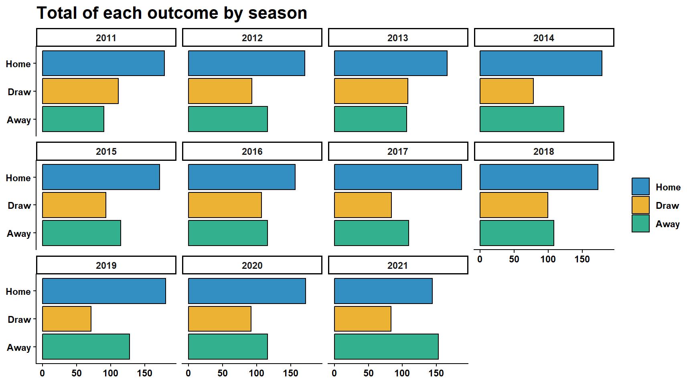
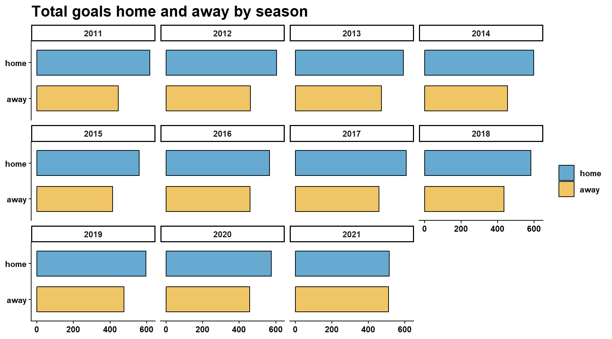
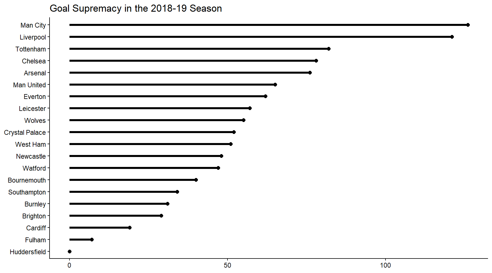
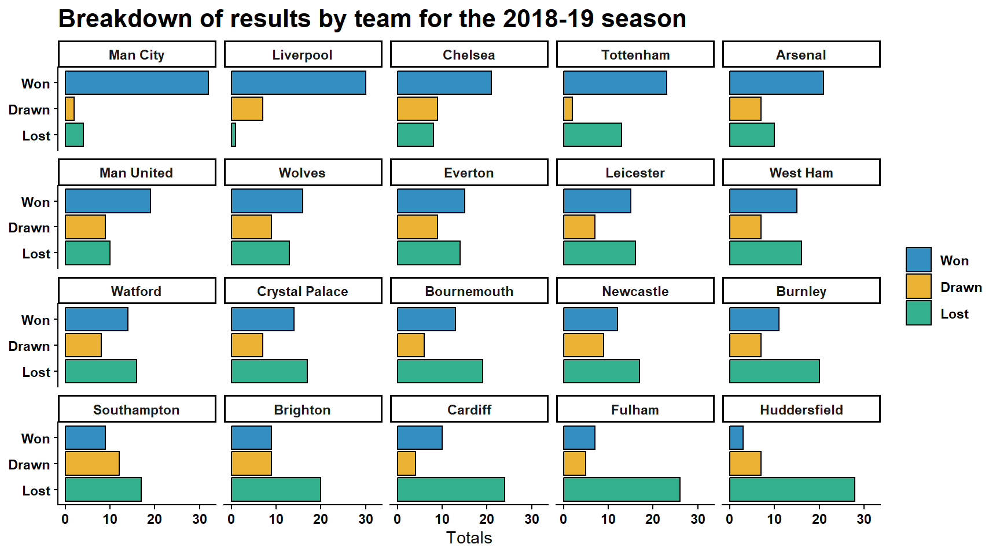

library(tidyverse)
library(slider)
library(clock)
library(tidymodels)
library(poissonreg)
library(rvest)
library(RSelenium)
library(robotstxt)
library(fs)Football Betting Model
1 Introduction
Our goal here is to investigate whether a profitable football betting model can be built using publicly available data.
Our answer to this question will involve building a full modelling workflow consisting of the following steps.
- Collecting data from various online sources
- Cleaning the data
- Conducting exploratory data analysis to uncover trends and tendencies within the data
- Feature Engineering
- Build an explanatory model
- Use our model to predict on previously unseen testing data
- Evaluate the results.
Having outlined what the process will be, we can now load the packages we will need to accomplish our goal.
2 Collecting Data
All data analysis starts with data. When it comes to football, the best data is usually collected by organisations such as Opta or Wyscout. The data provided by these organisations is remarkably detailed and sophisticated, but the very high cost of subscribing to these services means it isn’t easy to access for most people.
Is it possible to make a profit on football betting without access to the above services? In other words, can it be done with data that is freely available to download? The best place to start here is the Football Data Website, which provides several years of data for each of the major European leagues, though in what follows we shall only consider the English Premier League.
As we are dealing with just seven seasons worth of data, it would be easy enough to download the files we need manually; but it is better to use code as then we will make the process faster and more scalable going forward.
2.1 Auto Download Process
Thankfully the links to the csv files have a common format, with the only difference being a reference to the season in question. This reference to the season takes the form of four digits, such that 1920 refers to the 2019-2020 season.
Therefore our first job is to construct a vector of the digits we need. Thankfully, this is very easily done:
numerals <- paste0(10:20, 11:21)
numerals [1] "1011" "1112" "1213" "1314" "1415" "1516" "1617" "1718" "1819" "1920"
[11] "2021"We can now create a vector of the links we need for the auto-download function:
data_urls <- paste0("https://www.football-data.co.uk/mmz4281/", numerals, "/E0.csv")
data_urls [1] "https://www.football-data.co.uk/mmz4281/1011/E0.csv"
[2] "https://www.football-data.co.uk/mmz4281/1112/E0.csv"
[3] "https://www.football-data.co.uk/mmz4281/1213/E0.csv"
[4] "https://www.football-data.co.uk/mmz4281/1314/E0.csv"
[5] "https://www.football-data.co.uk/mmz4281/1415/E0.csv"
[6] "https://www.football-data.co.uk/mmz4281/1516/E0.csv"
[7] "https://www.football-data.co.uk/mmz4281/1617/E0.csv"
[8] "https://www.football-data.co.uk/mmz4281/1718/E0.csv"
[9] "https://www.football-data.co.uk/mmz4281/1819/E0.csv"
[10] "https://www.football-data.co.uk/mmz4281/1920/E0.csv"
[11] "https://www.football-data.co.uk/mmz4281/2021/E0.csv"Before downloading the files, we will also need to provide a vector of names with which the files will be labelled:
file_names <- paste0("epl_season_", numerals, ".csv")
file_names [1] "epl_season_1011.csv" "epl_season_1112.csv" "epl_season_1213.csv"
[4] "epl_season_1314.csv" "epl_season_1415.csv" "epl_season_1516.csv"
[7] "epl_season_1617.csv" "epl_season_1718.csv" "epl_season_1819.csv"
[10] "epl_season_1920.csv" "epl_season_2021.csv"The function walk2() from the purrr package makes the downloading very simple, calling the download.file() function for every link in our vector of data urls.
walk2(data_urls, file_names, download.file, mode = "wb")The foregoing step downloads the files into our working directory. We now use the fs package to move the files into a raw_data folder.
file_move(file_names, "raw_data")2.2 Webscraping
The above downloads give us enough data to start building models. However, it would be nice to be able to include some rather more advanced statistics, such as the ones mentioned above that are provided by Opta or Wyscout. The most important statistic provided by these organisations is the expected goals figure, usually abbreviated to xG.
Thankfully there is a website, namely Understat, that provides an xG figure free of charge. Understat does not provide an API nor does it have csv files available for download; so to obtain the xG data we shall have to build a webscraper.
We first establish that there are no restrictions on what we can scrape:
paths_allowed("understat.com/")[1] TRUEAll user-agents are permitted.
Unfortunately the website uses JavaScript to render much of the information we want, so the job of scraping the data is not as straightforward as we might wish.
Our scraper will use a combination of RSelenium and rvest. The selenium functions will be used to navigate between the pages and rvest will be used to scrape the data once the page in question has loaded.
We start with a vector of urls and an empty data-frame:
page_urls <- paste0("https://understat.com/league/EPL/", 2014:2021)
football_xg_results <-
tibble(
season = character(),
home_team = character(),
home_goals = character(),
home_xg = character(),
away_team = character(),
away_goals = character(),
away_xg = character()
)If for some reason one of the links can’t be accessed, we shall need to create a safe version of tibble so that we can continue to harvest the data we need after an error; therefore we use possibly() to provide a safe default value.
possibly_tibble <- possibly(tibble, otherwise = NULL)We can now set up RSelenium. First select the driver:
binman::list_versions("chromedriver")$win32
[1] "113.0.5672.63" "114.0.5735.16" "114.0.5735.90" "117.0.5938.92"Now boot up the client and server:
remote_driver <- rsDriver(
browser = "firefox",
chromever = "114.0.5735.90",
port = netstat::free_port(),
verbose = FALSE,
phantomver = NULL
)
remDr <- remote_driver$client
remDr$open()We now loop over the page_url vector, using RSelenium to navigate between sub-pages.
There aren’t many situations in R where loops are needed, but we shall need both a for loop and a repeat loop to navigate through the pages. Basically, the repeat-loop runs for as long as the prev_page_button (a JavaScript control) is active, which allows us to access all sub-pages within each url.
for (url in page_urls) {
remDr$navigate(url)
repeat {
html <- pluck(remDr$getPageSource(), 1) |>
read_html()
temp_tbl <- possibly_tibble(
season = html_element(html, ".calendar-date") |>
html_text(),
home_team = html_elements(html, ".team-home a") |>
html_text(),
home_goals = html_elements(html, ".teams-goals .team-home") |>
html_text(),
home_xg = html_elements(html, ".teams-xG .team-home") |>
html_text(),
away_team = html_elements(html, ".team-away a") |>
html_text(),
away_goals = html_elements(html, ".teams-goals .team-away") |>
html_text(),
away_xg = html_elements(html, ".teams-xG .team-away") |>
html_text()
)
football_xg_results <- bind_rows(football_xg_results, temp_tbl)
prev_page_button <- remDr$findElement(using = "css", ".calendar-prev")
button_is_enabled <- pluck(prev_page_button$isElementEnabled(), 1)
if (button_is_enabled == FALSE) break
prev_page_button$clickElement()
}
}We can now close down both our client and our server:
remDr$close()
remote_driver$server$stop()
system("taskkill /im java.exe /f", intern = FALSE, ignore.stdout = FALSE)Our data is now harvested into a dataframe and can be written to disk.
write_csv(football_xg_results, "raw_data_2/football_xg_results")3 Data Cleaning
We now have one dataframe and a collection of csv files. Before we can start building our model, we will have to combine these csv files into a dataframe. Both dataframes will need to be cleaned before being joined together for feature engineering and modelling.
3.1 The xG dataframe
We can make a start on the the football_xg_results dataframe, as this is the simpler task of the two. Start by reading in the relevant dataframe:
football_xg_results <- read_csv("raw_data_2/football_xg_results")The first thing to check, of course, is whether we have any missing values.
football_xg_results |>
map_int(function(.x) sum(is.na(.x))) season home_team home_goals home_xg away_team away_goals away_xg
0 0 0 0 0 0 0 So there is no data missing.
However, if we look closely at the data, we shall see that that the date of each match is not always correct. The reason for the error is down to the way we wrote our scraper, which didn’t record the data on each subpage. To harvest the correct date was possible but would have required a much more complicated approach. I didn’t feel as though this extra complexity was warranted because, as previously stated, we intend to join this dataframe with the data we downloaded from the Football Data Website, in which all the date features are correct.
So for now all we really need to do is construct a season variable, which will use for the upcoming join between dataframes. Therefore let’s start by using the clock package to parse the date into the correct format:
football_xg_results <- football_xg_results |>
mutate(date = date_parse(season, format = "%A, %B %d, %Y")) |>
arrange(date, home_team)We can now engineer a season variable, again using the clock package. At this point the date variable is supernumerary and can be dropped.
football_xg_results <- football_xg_results |>
mutate(season = get_year(date) + (get_month(date) >= 8)) |>
select(-date)3.2 The basic dataframe
Our first job here is to read the various csv files into a single dataframe.
We shall call this dataframe football_price_data as it contain essential information as to the betting odds available on each match.
football_price_data <- dir("raw_data", full.names = TRUE) |>
map(function(.x) read_csv(.x, col_types = cols(.default = "c"))) |>
list_rbind()First we rename the relevant features to better suit our purpose.
football_price_data <- football_price_data |>
select(
date = Date, home_team = HomeTeam, away_team = AwayTeam,
home_goals = FTHG, away_goals = FTAG, outcome = FTR, max_home_price = BbMxH,
avg_home_price = BbAvH, max_draw_price = BbMxD, avg_draw_price = BbAvD,
max_away_price = BbMxA, avg_away_price = BbAvA, B365H:BSA
)Now that we have read in our data, we need to check for missing values:
football_price_data |>
select(date:avg_away_price) |>
map_int(function(.x) sum(is.na(.x))) date home_team away_team home_goals away_goals
1 1 1 1 1
outcome max_home_price avg_home_price max_draw_price avg_draw_price
1 761 761 761 761
max_away_price avg_away_price
761 761 There are 761 missing values for each of the price variables; thankfully this is easily fixed.
We also need to check on the variable-type of our features to avoid any type mismatches when we begin feature engineering and modelling.
football_price_data |>
select(date:avg_away_price) |>
map_chr(function(.x) class(.x)) date home_team away_team home_goals away_goals
"character" "character" "character" "character" "character"
outcome max_home_price avg_home_price max_draw_price avg_draw_price
"character" "character" "character" "character" "character"
max_away_price avg_away_price
"character" "character" Let’s make it our first job to convert each variable to the correct class. The outcome needs to be a factor and all features relating to goals and betting odds need to be numeric.
football_price_data <- football_price_data |>
relocate(outcome, .after = away_team) |>
mutate(outcome = as.factor(outcome)) |>
mutate(across(home_goals:avg_away_price, as.numeric))We can now turn our attention to the date feature. This is rather more complex, as the date is represented in two different ways; we therefore need to rework the date variable into a consistent format. We do this using a simple regular-expression:
football_price_data <- football_price_data |>
mutate(
date = str_replace(date, "/10$", "/2010"),
date = str_replace(date, "/11$", "/2011"),
date = str_replace(date, "/12$", "/2012"),
date = str_replace(date, "/13$", "/2013"),
date = str_replace(date, "/14$", "/2014"),
date = str_replace(date, "/15$", "/2015"),
date = str_replace(date, "/16$", "/2016"),
date = str_replace(date, "/17$", "/2017")
)With the irregularities removed, we can now convert the variable into the format of a true date:
football_price_data <- football_price_data |>
mutate(date = date_parse(date, format = "%d/%m/%Y"))Next we need to calculate the missing values.
To do this, we simply calculate the max() and the mean() from the given bookmakers’ prices. This is a slightly more complicated process than usual because we have to operate on our data on a row-by-row basis; but the rowwise() function makes this a relatively painless affair.
We start by converting the columns we need to a numeric format:
football_price_data <- football_price_data |>
mutate(across(B365H:BSA, as.numeric))We then calculate the missing data using rowwise() and c_across():
football_price_data <- football_price_data |>
rowwise() |>
mutate(max_home_price = max(c_across(ends_with("H")), na.rm = TRUE)) |>
ungroup()
football_price_data <- football_price_data |>
rowwise() |>
mutate(avg_home_price = mean(c_across(ends_with("H")), na.rm = TRUE)) |>
ungroup()
football_price_data <- football_price_data |>
rowwise() |>
mutate(max_draw_price = max(c_across(ends_with("D")), na.rm = TRUE)) |>
ungroup()
football_price_data <- football_price_data |>
rowwise() |>
mutate(avg_draw_price = mean(c_across(ends_with("D")), na.rm = TRUE)) |>
ungroup()
football_price_data <- football_price_data |>
rowwise() |>
mutate(max_away_price = max(c_across(ends_with("A")), na.rm = TRUE)) |>
ungroup()
football_price_data <- football_price_data |>
rowwise() |>
mutate(avg_away_price = mean(c_across(ends_with("A")), na.rm = TRUE)) |>
ungroup()Finally we select the columns we need and drop any remaining NA values:
football_price_data <- football_price_data |>
select(date:avg_away_price) |>
drop_na()3.3 Joining our dataframes
In order to join our dataframes a couple of additional steps are needed.
First we need to engineer a season variable in our football_price_data dataframe. This variable, together with the home and away teams, acts like a key-column in a database, guaranteeing that our dataframes will be joined correctly.
football_price_data <- football_price_data |>
mutate(season = get_year(date) + (get_month(date) >= 8)) |>
relocate(season, .after = date)The second (and final) step is make the names of the teams consistent.
football_xg_results <- football_xg_results |>
mutate(home_team = case_when(
home_team == "Manchester City" ~ "Man City",
home_team == "Manchester United" ~ "Man United",
home_team == "Newcastle United" ~ "Newcastle",
home_team == "Queens Park Rangers" ~ "QPR",
home_team == "West Bromwich Albion" ~ "West Brom",
home_team == "Wolverhampton Wanderers" ~ "Wolves",
TRUE ~ home_team
))
football_xg_results <- football_xg_results |>
mutate(away_team = case_when(
away_team == "Manchester City" ~ "Man City",
away_team == "Manchester United" ~ "Man United",
away_team == "Newcastle United" ~ "Newcastle",
away_team == "Queens Park Rangers" ~ "QPR",
away_team == "West Bromwich Albion" ~ "West Brom",
away_team == "Wolverhampton Wanderers" ~ "Wolves",
TRUE ~ away_team
))We can now join our dataframes into one:
football_data <-
football_price_data |>
left_join(
football_xg_results,
by = c(
"season" = "season", "home_team" = "home_team",
"away_team" = "away_team", "home_goals" = "home_goals",
"away_goals" = "away_goals"
)
) |> arrange (date, home_team)Finally, we write the result to disk:
write_csv(football_data, "cleaned_data/football_data")4 Data Exploration
The most important part of any model is feature engineering. However, while the success of our model will be highly dependent on feature engineering, the quality of our feature engineering will likewise depend upon how well we do our data exploration. Simply put, without a thorough understanding of our data we will not know what features we need to engineer.
In this instance, we do have a few short-cuts open to us. It is well known that the probability of a given team winning a match can be modelled quite accurately using just two features, namely home-advantage and average goals scored. So to save ourselves some time, we shall focus on these features in what follows.
4.1 Home Advantage
Let’s first consider the contribution of home-advantage to the outcome of a match. This is easily measured in football, at least superficially, as every team plays every other team twice per season, with one of these matches being played at the home stadium and one away. If the respective ability of the teams in question was all that mattered, then we would see no difference in the number of home-wins vs away-wins.
football_data |>
mutate(outcome = case_when(
outcome == "H" ~ "Home",
outcome == "D" ~ "Draw",
outcome == "A" ~ "Away"
)) |>
ggplot(aes(x = outcome, fill = outcome)) +
geom_bar(colour = "black", alpha = 0.8) +
facet_wrap(facets = "season") +
coord_flip() +
labs(x = NULL, y = NULL, title = "Total of each outcome by season") +
guides(fill = guide_legend(reverse = TRUE, title = NULL)) +
scale_fill_manual(values = c("#009E73", "#E69F00", "#0072B2")) +
theme_classic() +
theme(
axis.text.x = element_text(face = "bold"),
axis.text.y = element_text(face = "bold"),
legend.text = element_text(face = "bold"),
strip.text = element_text(face = "bold"),
plot.title = element_text(face = "bold", size = 16)
)
As we can see, in all bar one season, the home team won more matches than their share. The single season when this did not hold was 2020-21, when the pandemic meant matches were played behind closed doors. This suggests that crowd support is the factor behind home-advantage.
The above finding is also supported by the total goals scored per season, both home and away.
football_data |>
group_by(season) |>
summarise(home = sum(home_goals),
away = sum(away_goals)) |>
ungroup() |>
pivot_longer(home:away, names_to = "location", values_to = "goals") |>
mutate(location = factor(location, levels = c("away", "home"))) |>
ggplot(aes(x = location, y = goals)) +
geom_col(aes(fill = location), colour = "black", alpha = 0.6, width = 0.7) +
facet_wrap(facet = "season") +
coord_flip() +
labs(x = NULL, y = NULL, title = "Total goals home and away by season") +
guides(fill = guide_legend(reverse = TRUE, title = NULL)) +
scale_fill_manual(values = c("#E69F00", "#0072B2")) +
theme_classic() +
theme(
axis.text = element_text(face = "bold"),
legend.text = element_text(face = "bold"),
strip.text = element_text(face = "bold"),
plot.title = element_text(face = "bold", size = 16)
)
As we can see, more goals were scored at home in every season save 2020-21. Given that the home vs. away wins in 2020-21 are exactly what we would expect given the ratio of home vs. away goals, we can feel even more secure in our conclusion that this was an anomaly brought about by the exclusion of fans. For any future matches played behind closed doors it would make sense to consider removing home-advantage from our model.
4.2 Team Ability
We can measure team ability in one of two ways: (1) by the matches they win; or (2) by the difference between the goals they score and the goals they concede. Whichever metric we choose, it is clear that there is a gulf between the best and worst teams in the English Premier League.
Consider, for example, the League table for the classic 2018-19 season:
football_data |>
pivot_longer(home_team:away_team, names_to = "location", values_to = "teams") |>
mutate(points = case_when(
location == "home_team" & outcome == "H" ~ 3,
location == "home_team" & outcome == "D" ~ 1,
location == "home_team" & outcome == "A" ~ 0,
location == "away_team" & outcome == "H" ~ 0,
location == "away_team" & outcome == "D" ~ 1,
location == "away_team" & outcome == "A" ~ 3
)) |>
mutate(goals_scored = case_when(
location == "home_team" ~ home_goals,
location == "away_team" ~ away_goals
)) |>
mutate(goals_conceded = case_when(
location == "home_team" ~ away_goals,
location == "away_team" ~ home_goals
)) |>
group_by(season, teams) |>
mutate(match_number = seq(teams)) |>
mutate(total_points = cumsum(points),
total_scored = cumsum(goals_scored),
total_conceded = cumsum(goals_conceded),
won = cumsum(points == 3),
drawn = cumsum(points == 1),
lost = cumsum(points == 0)) |>
ungroup() |>
filter(match_number == 38 & season == 2019) |>
rename(GF = total_scored, GA = total_conceded) |>
mutate(GD = GF - GA) |>
mutate(played = match_number) |>
select(teams, played, won, drawn, lost, GF, GA, GD, total_points) |>
arrange(desc(total_points)) # A tibble: 20 × 9
teams played won drawn lost GF GA GD total_points
<chr> <int> <int> <int> <int> <dbl> <dbl> <dbl> <dbl>
1 Man City 38 32 2 4 95 23 72 98
2 Liverpool 38 30 7 1 89 22 67 97
3 Chelsea 38 21 9 8 63 39 24 72
4 Tottenham 38 23 2 13 67 39 28 71
5 Arsenal 38 21 7 10 73 51 22 70
6 Man United 38 19 9 10 65 54 11 66
7 Wolves 38 16 9 13 47 46 1 57
8 Everton 38 15 9 14 54 46 8 54
9 Leicester 38 15 7 16 51 48 3 52
10 West Ham 38 15 7 16 52 55 -3 52
11 Watford 38 14 8 16 52 59 -7 50
12 Crystal Palace 38 14 7 17 51 53 -2 49
13 Bournemouth 38 13 6 19 56 70 -14 45
14 Newcastle 38 12 9 17 42 48 -6 45
15 Burnley 38 11 7 20 45 68 -23 40
16 Southampton 38 9 12 17 45 65 -20 39
17 Brighton 38 9 9 20 35 60 -25 36
18 Cardiff 38 10 4 24 34 69 -35 34
19 Fulham 38 7 5 26 34 81 -47 26
20 Huddersfield 38 3 7 28 22 76 -54 16The goal difference between the top and bottom sides is a remarkable 126 goals across just 38 games. This is a staggering difference and the features we build for our model must reflect this, a concept usually known as goal supremacy.
We can view the scale of the difference in the following plot:
football_data |>
pivot_longer(home_team:away_team, names_to = "location", values_to = "teams") |>
mutate(goals_scored = case_when(
location == "home_team" ~ home_goals,
location == "away_team" ~ away_goals
)) |>
mutate(goals_conceded = case_when(
location == "home_team" ~ away_goals,
location == "away_team" ~ home_goals
)) |>
group_by(season, teams) |>
mutate(match_number = seq(teams)) |>
mutate(total_scored = cumsum(goals_scored),
total_conceded = cumsum(goals_conceded),
goal_diff = total_scored - total_conceded)|>
ungroup() |>
filter(season == 2019 & match_number == 38) |>
select(teams, goal_diff) |>
mutate(goal_supremacy = goal_diff - min(goal_diff)) |>
mutate(teams = fct_reorder(teams, goal_supremacy)) |>
ggplot(aes(x = teams, y = goal_supremacy)) +
geom_point(size = 2) +
geom_segment(aes(x = teams, xend = teams, y = 0, yend = goal_supremacy), size = 1.25) +
coord_flip() +
labs(x = NULL, y = NULL, title = "Goal Supremacy in the 2018-19 Season") +
theme_classic()
Similarly we can show the difference in ability between teams by plotting the number of wins, draws and losses for each of the sides.
This is a more complicated plot and will require us to first extract a vector of team-names, ordered by way of finishing position:
team_order <- football_data |>
pivot_longer(home_team:away_team, names_to = "location", values_to = "teams") |>
mutate(points = case_when(
location == "home_team" & outcome == "H" ~ 3,
location == "home_team" & outcome == "D" ~ 1,
location == "home_team" & outcome == "A" ~ 0,
location == "away_team" & outcome == "H" ~ 0,
location == "away_team" & outcome == "D" ~ 1,
location == "away_team" & outcome == "A" ~ 3
)) |>
group_by(season, teams) |>
mutate(match_number = seq(teams)) |>
mutate(total_points = cumsum(points)) |>
ungroup() |>
filter(match_number == 38 & season == 2019) |>
arrange(desc(total_points)) |>
pull(teams)This plot shows the number of games each side won, drew or lost in in the 2018-19 season. The teams are arranged according to their finishing position in the league:
football_data |>
pivot_longer(home_team:away_team, names_to = "location", values_to = "teams") |>
mutate(match_outcome = case_when(
location == "home_team" & outcome == "H" ~ "Won",
location == "home_team" & outcome == "D" ~ "Drawn",
location == "home_team" & outcome == "A" ~ "Lost",
location == "away_team" & outcome == "H" ~ "Lost",
location == "away_team" & outcome == "D" ~ "Drawn",
location == "away_team" & outcome == "A" ~ "Won"
)) |>
mutate(match_outcome = factor(
match_outcome, levels = c("Lost", "Drawn", "Won"))
) |>
mutate(teams = factor(teams, levels = team_order)) |>
filter(season == 2019) |>
ggplot(aes(x = match_outcome)) +
geom_bar(aes(fill = match_outcome), colour = "black", alpha = 0.8) +
coord_flip() +
facet_wrap(facets = "teams") +
labs(y = "Totals", x = NULL,
title = "Breakdown of results by team for the 2018-19 season") +
guides(fill = guide_legend(reverse = TRUE, title = NULL)) +
scale_fill_manual(values = c("#009E73", "#E69F00", "#0072B2")) +
theme_classic() +
theme(
axis.text.x = element_text(face = "bold"),
axis.text.y = element_text(face = "bold"),
legend.text = element_text(face = "bold"),
strip.text = element_text(face = "bold"),
plot.title = element_text(face = "bold", size = 16)
)
One thing to note is how similar the order of the teams is between these plots. It seems that goal-supremacy and the total number of points is highly correlated, so we shall focus on engineering features based on goals. The home-advantage is also significant and needs to be taken into account.
5 Feature Engineering
The obvious model to use here is poisson regression; but should we run our regression on the goals or the expected goals? This isn’t an easy decision: using goals-scored as our explanatory variable is problematic because the scoreline of a game is often highly misleading. Goals are fairly rare events and it’s commonplace for teams to get lucky with respect to the scoreline.
In this respect, expected-goals is a better option. The problem with expected-goals is that the best teams will often score more goals than expected, just as the worst teams often score fewer. This is what we should expect, as the best teams will convert a greater percentage of chances owing to the quality of their players. Similarly, the lesser teams will often fail to take thier chances as their quality of player isn’t quite so high. Therefore if we run our regression on expected goals we run the risk of underplaying the superiority of the best sides. An obvious compromise is to take the mean of actual and expected-goals.
But first we must address some missing values that crept in when we left_joined() our data; the NA values are down to the two datasets containing different numbers of seasons.
football_data <- drop_na(football_data) Next we introduce a match_number variable. To do this we will have to pivot our data into long format using pivot_longer():
football_data_long <- football_data |>
pivot_longer(home_team:away_team, names_to = "location", values_to = "teams") |>
group_by(season, teams) |>
mutate(match_number = seq(teams)) |>
ungroup() |>
select(date, teams, match_number)We now need our data back in the wide format. Using pivot_wider() doesn’t work in this context so we have to use left_join() instead:
football_data <- football_data |>
left_join(
football_data_long,
by = c("date" = "date", "home_team" = "teams")
) |>
left_join(
football_data_long,
by = c("date" = "date", "away_team" = "teams"),
suffix = c("_home", "_away")
)Let’s now take the mean of actual and expected goals:
football_data <- football_data |>
rowwise() |>
mutate(
home_goals_combined = (home_goals + home_xg) / 2,
away_goals_combined = (away_goals + away_xg) / 2
) |>
ungroup()Next we use slide_mean() from the slider package to calculate the rolling mean of goals scored and conceded at home by each side in their last six home games. It is important we lag() this feature to avoid data leakage.
football_data <- football_data |>
group_by(home_team, season) |>
mutate(
avg_goals_home = slide_mean(home_goals_combined, before = 6),
avg_conceded_home = slide_mean(away_goals_combined, before = 6)
) |>
mutate(
avg_goals_home = lag(avg_goals_home),
avg_conceded_home = lag(avg_conceded_home)
) |>
ungroup() |> drop_na()We now do the same for the away sides:
football_data <- football_data |>
group_by(away_team, season) |>
mutate(
avg_goals_away = slide_mean(away_goals_combined, before = 6),
avg_conceded_away = slide_mean(home_goals_combined, before = 6)
) |>
mutate(
avg_goals_away = lag(avg_goals_away),
avg_conceded_away = lag(avg_conceded_away)
) |>
ungroup() |> drop_na()Now each side has a separate figure for their home-games and for their away games. This should enable us to capture the extent of home-advantage. Finally we remove the first six games of the season, home and away. They are removed because we use the first six games to calculate the rolling means we are using as explanatory variables.
football_data <- football_data |>
filter(match_number_home >= 6, match_number_away >= 6)Our next job is to build the model. The choice of poisson regression makes this is a fairly simple process, as there are no parameters to tune.
6 Building a Model
As always, we begin by splitting our data into training and test sets:
football_train <- football_data |>
filter(season < 2017)
football_test <- football_data |>
filter(season > 2016 & season < 2022)We need two models. The first model predicts the number of goals scored by the home-team:
model_home <- poisson_reg() |>
set_engine("glm") |>
fit(home_goals ~ avg_goals_home + avg_conceded_away, data = football_train)The second model predicts the number of goals scored by the away-team:
model_away <- poisson_reg() |>
set_engine("glm") |>
fit(away_goals ~ avg_goals_away + avg_conceded_away, data = football_train)In turn we have two sets of predictions, home and away:
home_preds <- predict(model_home, new_data = football_test)
away_preds <- predict(model_away, new_data = football_test)We can now combine these predictions into a single dataset:
match_preds <- football_test |>
select(date:away_goals, starts_with("max_")) |>
bind_cols(home_preds) |>
rename(home_pred = .pred) |>
bind_cols(away_preds) |>
rename(away_pred = .pred)How accurate is our model?
7 Evaluation
Before attempting to measure the accuracy of our model we should first remind ourselves what we have predicted. For each match in football_test we have predicted the goals scored by both the home and away sides. This is not, however, what we are really interested in. What we really want to know is what team is the more likely winner.
To answer this question we must first write a function for converting the outputs of the model into probabilities:
calculate_odds <-
function(outcome, pred_home_goals, pred_away_goals, max_goals = 9) {
home_goals <- dpois(0:max_goals, pred_home_goals)
away_goals <- dpois(0:max_goals, pred_away_goals)
goal_matrix <- home_goals %o% away_goals
if (outcome == "H") {
home_prob <- sum(goal_matrix[lower.tri(goal_matrix)])
return(home_prob)
} else if (outcome == "A") {
away_prob <- sum(goal_matrix[upper.tri(goal_matrix)])
return(away_prob)
} else if (outcome == "D") {
draw_prob <- sum(diag(goal_matrix))
return(draw_prob)
}
}We can use our calculate_odds() function to derive the relevant probabilities from the match_preds dataframe:
match_preds <- match_preds |>
rowwise() |>
mutate(
home_prob = calculate_odds("H", home_pred, away_pred),
draw_prob = calculate_odds("D", home_pred, away_pred),
away_prob = calculate_odds("A", home_pred, away_pred)
) |>
ungroup()We now have the probability of each possible outcome for every match in match_preds. So how shall we evaluate our model? One way is to compare our probabilities to those of the bookmakers. If our model is competitive with the bookmakers’ odds, then we’ve done a pretty good job.
To do this let’s convert our probabilities into betting odds:
match_preds <- match_preds |>
select(date:outcome, starts_with("max_"), ends_with("_prob")) |>
mutate(
home_price = 1 / home_prob,
draw_price = 1 / draw_prob,
away_price = 1 / away_prob
) |>
select(date:outcome, ends_with("_price"))A simple way to make the comparison between ourselves and the bookmakers is to place a virtual bet every time the bookmaker’s odds exceed our own. The following dataframe is a record of every bet we would make following this methodology:
results <- match_preds |>
mutate(home_bets = if_else(
condition = home_price < max_home_price,
true = (max_home_price * (outcome == "H")) - 1,
false = 0
)) |>
mutate(draw_bets = if_else(
condition = draw_price < max_draw_price,
true = (max_draw_price * (outcome == "D")) - 1,
false = 0
)) |>
mutate(away_bets = if_else(
condition = away_price < max_away_price,
true = (max_away_price * (outcome == "A")) - 1,
false = 0
)) Is the model profitable?
results |>
group_by(season) |>
mutate(all_bets = home_bets + draw_bets + away_bets) |>
summarise(
total_bets = sum(home_bets != 0),
total_wins = sum(home_bets > 0),
profit = sum(home_bets)
) # A tibble: 5 × 4
season total_bets total_wins profit
<int> <int> <int> <dbl>
1 2017 185 73 27.4
2 2018 200 67 26.7
3 2019 176 62 34.2
4 2020 188 64 27.2
5 2021 182 46 -31.4Perhaps surprisingly the answer is yes: we make a profit in four out of five seasons. It is probably significant that the one losing season was when the matches were played behind closed doors, which may well have thrown off the implicit home-advantage feature.
The following plot shows match days (i.e. the days on which we are able to bet) against profit. For such a simple model the results are surprisingly consistent, at least up until covid forced the spectators to stay at home.
results |>
filter(home_bets != 0) |>
mutate(
year = get_year(date),
month = get_month(date)
) |>
group_by(year, month) |>
mutate(profit = sum(home_bets)) |>
ungroup() |>
select(year, month, profit) |>
distinct() |>
mutate(
profit = cumsum(profit),
index = row_number()
) |>
ggplot(aes(x = index, y = profit)) +
geom_line(size = 1.5) +
labs(x = "Total Betting Days", y = "Total Profit",
title = "Profits for English Premier League") +
theme_classic() +
theme(
axis.text.x = element_text(face = "bold"),
axis.text.y = element_text(face = "bold"),
plot.title = element_text(face = "bold", size = 16)
) 
Overall we can be quite pleased with our efforts. Certainly decent results can be obtained when it comes to predicting football games using publicly available data.